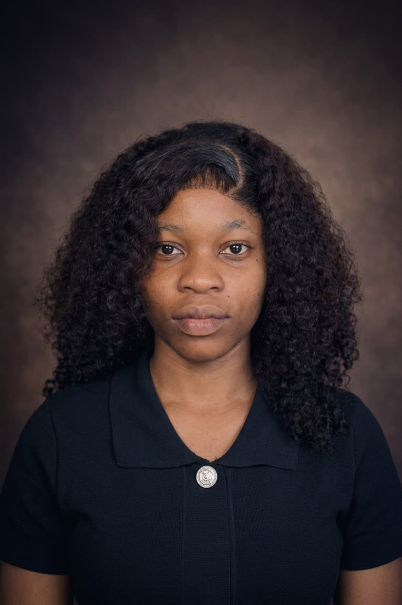

Abulu Tare Jennifer | WDD 130

Hello, my name is Abulu Tare Jennifer. I am twenty-five years old and I am from Delta State, Nigeria. I am currently a student at BYU-Pathway Worldwide, pursuing a bachelor's degree in Software Development. My interest in software development began in 2021. It started with a desire to understand how software programs work and was further inspired by the rapid advancement of artificial intelligence (AI).
Due to my family's financial circumstances, I could not afford to attend a traditional university. However, thanks to BYU-Pathway Worldwide, I am now able to pursue my dream of completing my education while also gaining valuable knowledge and skills in software development.